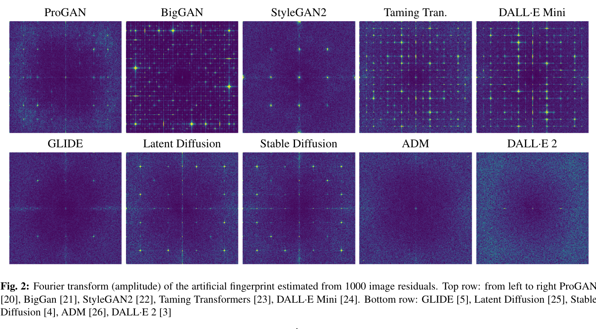
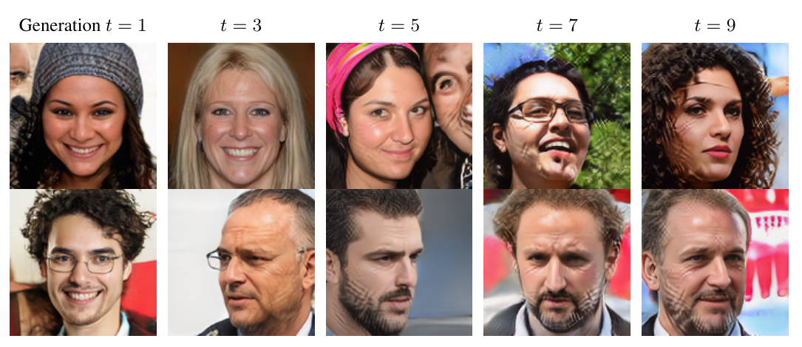
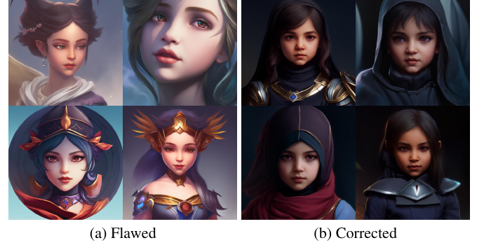
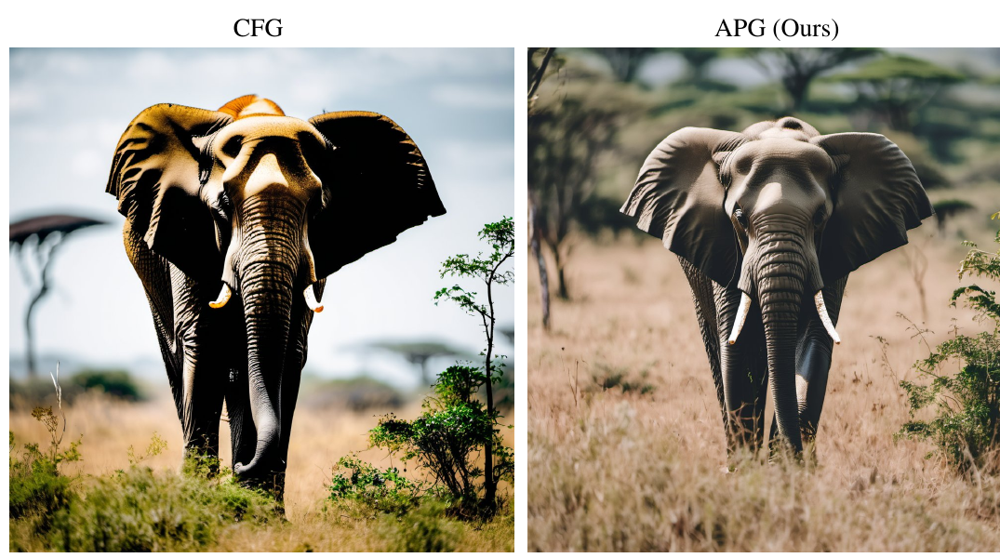
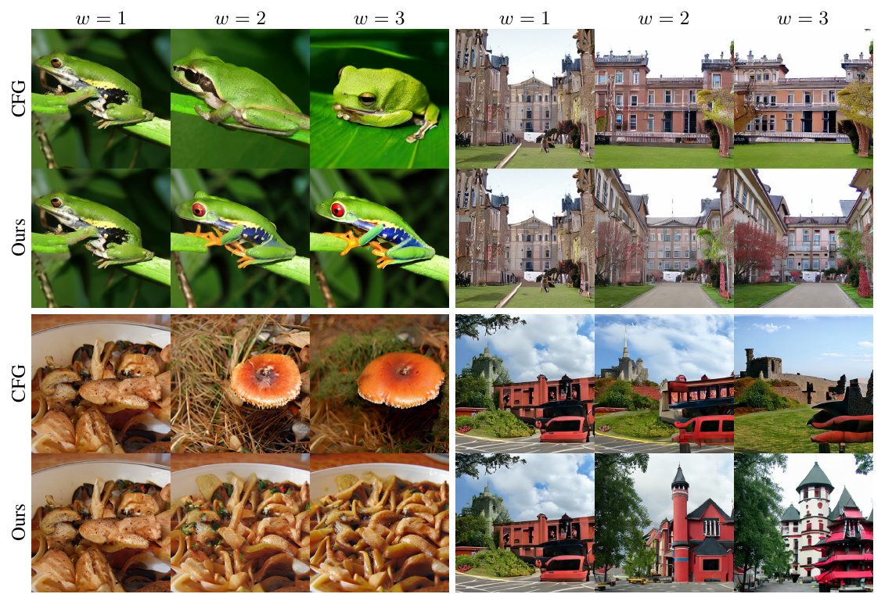
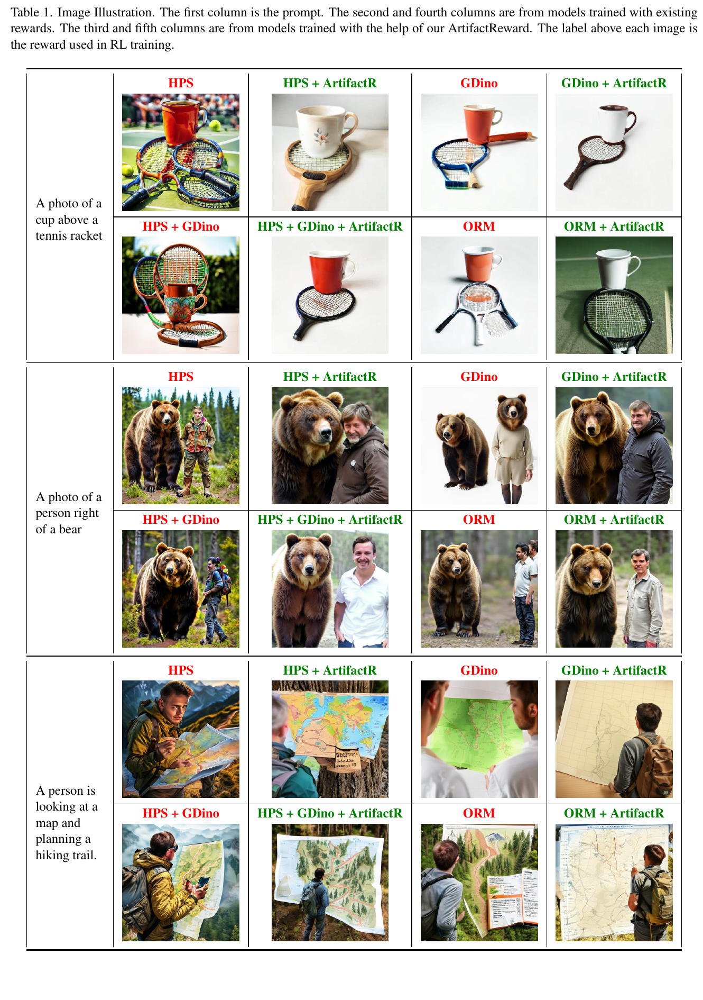
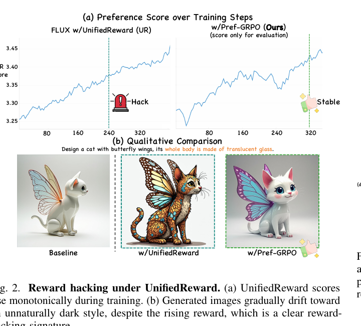
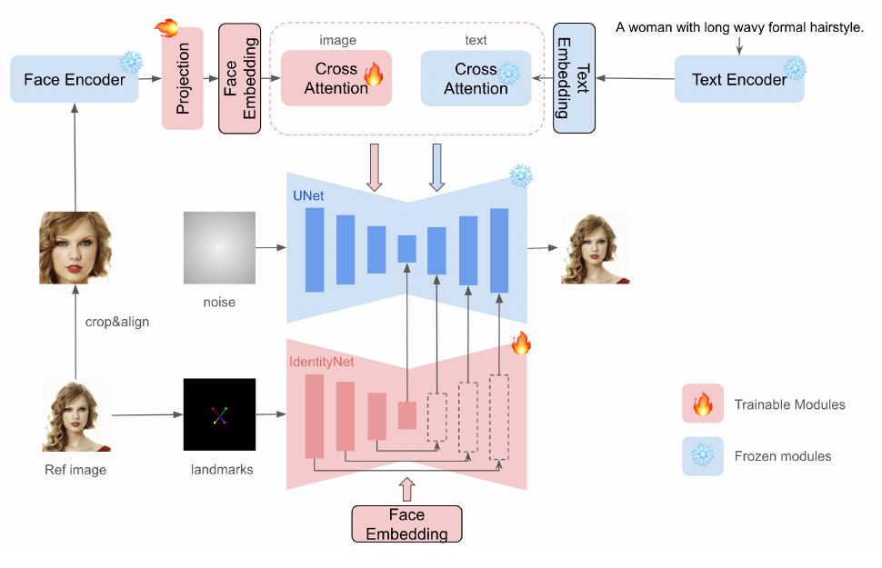
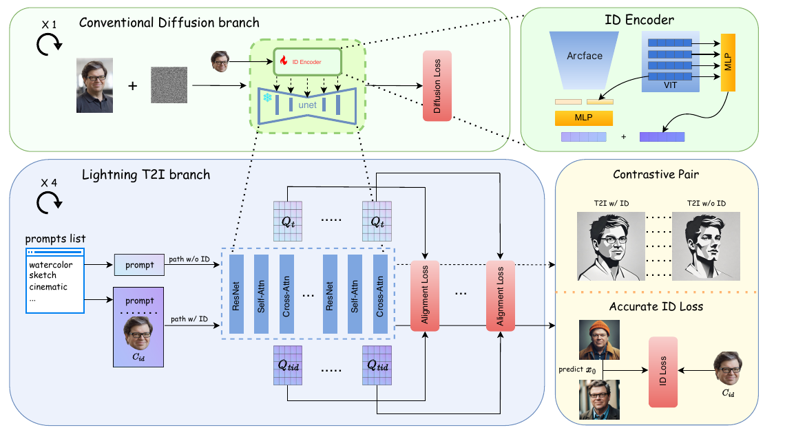
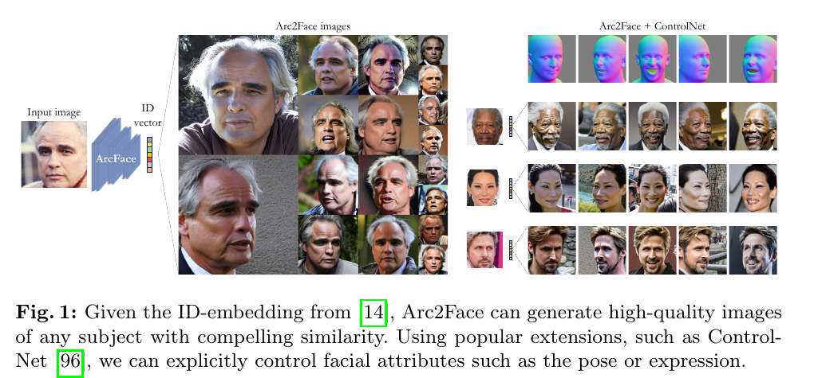

怎样让生成图像「不像 AI 生成的」？——消除 AIGC 感与人像真实感的业界方法调研（2020→2026）
1. 概述与范围
1.1 「AIGC 感」到底是什么
把「这张图一看就是 AI 生成的」拆开，它其实是两层独立问题的叠加，对策也分属不同阶段，不能混为一谈：
- 信号层（物理可测的伪影）：上采样算子（转置卷积 / 最近邻插值）、VAE 压缩、以及扩散本身的去噪统计，会在图像上留下周期性的频谱峰值 / 网格状残差。这是取证检测器（forensics）能在人眼无法分辨时仍一眼抓出假图的物理依据，也是「皮肤像塑料、纹理太干净」这类直觉的信号学来源。
- 审美层（分布与偏好扭曲）：即使像素层面没有明显伪影，图仍可能「假」——过饱和的浓郁色彩、人物一律正脸对称、皮肤蜡质无瑕、构图千篇一律的「house style」、以及手/牙/眼的结构错误。这些来自三个机制：高 classifier-free guidance（CFG）把分布推向尖锐模式、奖励模型被攻陷（reward hacking）后模型向「高分但不真实」坍缩、以及用 AI 生成图递归训练导致的多样性退化。
这个二分法是本调研的组织主线。一条真实感流水线通常要在数据、训练/对齐、采样、后处理四个阶段同时下手，单点优化往往被其他阶段抵消。
1.2 七条轴线与范围
本文按「在哪个阶段打击 AIGC 感」把方法分为七组，时间窗 2020–2026，重心放在 2023 年后扩散/流匹配时代、并对人像（身份保持 vs 真实感的内在张力）单列一节：
- 根因诊断（取证视角：AI 图为什么可被检测 = 它为什么「假」）
- 数据层：真图优先、拒绝 AI 合成数据（及其理论依据——模型坍缩）
- 采样/引导层：修高 CFG 的过饱和与「塑料感」
- 对齐层：抗 reward hacking 导致的审美坍缩
- 细节/纹理层：VAE 与超分如何保住毛孔级细节
- 人像专项：身份保持方法与真实感的张力
- 工程后处理与「去 AI 化」社区实践
1.3 核实声明
本调研遵循本仓库 survey 的铁律：线索来自记忆，事实来自核实。每一个 arxiv 号、发表年份、数据集名、headline 数字都经联网核实；凡无法确认的，标 [未核实] 或直接略去。涉及代码的主张（CFG-rescale、APG、InstantID、PuLID）均打开官方/diffusers 的真实函数比对，不凭记忆断言「某函数实现了 X」。仓库内已精读过的工作（Krea 2、LLaDA-Image、Qwen-Image、PixRestore、SeFi-Image、扩散超分调研）直接复用其已核实结论，并以 <a class="wiki-link" data-slug="slug">slug</a> 交叉链接。
2. 逐篇精要
2.1 根因诊断：AI 图为什么「假」（取证视角）
要消除 AIGC 感，先得知道它长在哪。取证检测领域反过来给出了最硬的答案：AI 图之所以可被高精度检测，是因为生成管线留下了人眼看不见但统计上稳定的指纹。消除 AIGC 感，本质上就是抹掉或打散这些指纹。
CNNDetection — CNN-generated images are surprisingly easy to spot… for now (Wang et al., CVPR 2020, arxiv:1912.11035) — ✅ verified
- 核心贡献: 证明「生成图指纹」是跨架构普适的——只在一个生成器（ProGAN）的假图上训练一个普通分类器，配合充分的数据增强，就能泛化到从未见过的架构（StyleGAN2、BigGAN、CycleGAN、GauGAN、DeepFake 等）。
- 方法: 标准 ResNet-50 二分类 + 关键的 JPEG/blur 数据增强；指纹不是语义内容而是 CNN 上采样留下的低层统计规律。
- 关键结果: 单一 ProGAN 训练集 → 11 种生成器上普遍可检出，包括当时刚发布的 StyleGAN2。
- 代码: github.com/peterwang512/CNNDetection（预训练权重公开）。
怎么做的：这篇是「AI 图有普适指纹」这一认知的奠基。作者的反直觉结论是——不需要见过目标生成器，只要见过一种 CNN 生成器留下的上采样痕迹，检测器就能迁移。关键设计是训练期强数据增强（随机 JPEG 压缩 + 高斯模糊）：它迫使分类器放弃依赖易被破坏的高频细节，转而学习更鲁棒、更本质的生成指纹。对「反 AIGC 感」的启示是双向的：想让图不被检出（也就是更真实），要么破坏这个上采样指纹（后处理加噪/重压缩/重采样），要么从源头换掉留指纹的算子——这正是后文像素空间扩散与无 VAE 路线的动机之一。标题那句「for now」则预言了检测与生成的军备竞赛。
On the detection of synthetic images generated by diffusion models (Corvi et al., ICASSP 2023, arxiv:2211.00680) — ✅ verified
- 核心贡献: 把 GAN 时代的「频谱指纹」分析搬到扩散模型，指出不同生成家族的指纹强弱差异巨大，且社交网络的压缩/缩放会削弱指纹（给检测带来麻烦、也给「去 AI 化」指路）。
- 方法: 用去噪滤波提取噪声残差，对 1000 张图的平均残差做傅里叶变换，得到各生成器的「合成指纹」谱。
- 关键结果: Stable Diffusion / Latent Diffusion / GLIDE 呈现明显的周期性频谱峰值（网格状伪影）；而 ADM、DALL·E 2 的指纹弱得多、几乎无峰。
- 代码: 无（分析型论文）。

怎么做的：方法本身朴素但结论关键。residual = 图像 − 去噪版本，把场景内容减掉只留管线噪声，再对上千张平均，随机内容相互抵消、系统性指纹被放大。两个对「真实感」直接有用的发现：其一，指纹来自解码器/上采样结构而非语义——所以 latent 扩散（VAE 解码器带转置卷积）指纹强，像素空间扩散（ADM）指纹弱，这解释了为何「从 VAE 换到像素空间」能降低塑料感（见 pixrestore-2026）；其二，JPEG 压缩与 resize 会显著削弱指纹，这既是检测器的噩梦，也解释了为什么社区「截图再发、过一道压缩、加噪点」的土办法确实能降低 AI 感——它在物理上打散了频谱峰值。
2.2 数据层：真图优先、拒绝 AI 合成数据
最根本的一层：如果训练分布本身就「带 AI 感」（混入了上一代模型的生成图、或被 IQA 分数过滤成同质高分图），再好的采样和对齐也救不回来。这一层有一个强理论支撑（模型坍缩）和两个旗帜鲜明的工业实践（Krea 2、LLaDA-Image），以及一个针锋相对的反例（Qwen-Image）。
AI models collapse when trained on recursively generated data (Shumailov et al., Nature 631:755–759, 2024) / Self-Consuming Generative Models Go MAD (Alemohammad et al., ICLR 2024, arxiv:2307.01850) — ✅ verified
- 核心贡献: 从理论+实验证明，把模型自己的输出递归喂回训练会导致不可逆的「模型坍缩 / MAD（Model Autophagy Disorder）」——分布尾部（稀有样本、多样性）先消失，质量（precision）或多样性（recall）逐代退化。
- 方法: 构造「自噬循环」(autophagous loop)，用上一代生成图训下一代，观察 FID / 分布尾部随代数的变化；MAD 论文给出「有无新鲜真实数据」的相图。
- 关键结果: 没有足够新鲜真实数据时，仅几代内就出现可见退化（MAD）；Nature 版在 LLM、VAE、GMM 上普遍复现该现象。
- 代码: MAD 有实验代码；Nature 版侧重理论。

怎么做的：两篇独立工作得到同向结论。机制是统计误差的世代累积——每一代采样都对真实分布做有限近似，低概率的尾部（罕见肤质、极端光照、非常规构图）最先被采样遗漏，下一代便再也学不到它们，分布逐代向「平均而安全」的峰收缩。这正是「AIGC 感」的分布学定义：多样性坍缩到少数高频模式。MAD 论文进一步区分三种循环（全合成、合成+固定真实、合成+新鲜真实），结论是只有持续注入新鲜真实数据才能稳住。这给数据策展一条铁律：训练集里混入生成图（哪怕来自更强的模型）都会给真实感设上限——下面 Krea 2 把它执行到了极致。
Krea 2 技术报告（Krea, 2026） — ✅ verified（仓库已精读 krea-2-2026）
- 核心贡献: 把「为创意探索而生、刻意保留宽美学分布」作为基础模型的第一性目标，用数据策展 + 多样性奖励 + 伪影奖励三件套系统性对抗「向高质量默认收敛」的 AIGC 感。
- 方法: 五阶段训练（预训练→midtraining→SFT→偏好优化→RL→蒸馏）；数据端零 AI 生成图、多样性 > 纯质量、反对用 IQA 分数做主过滤。
- 关键结果: 登上 Artificial Analysis T2I 榜前 10、独立实验室第 2（自述）；并给出一条反直觉工程结论——32× 压缩的 DC-AE 被弃用，因为它给细节设了上限。
- 代码: 权重 + 推理代码开源（github.com/krea-ai）；训练/策展为报告描述。
怎么做的（本调研最核心的锚点）：Krea 2 把前述模型坍缩理论直接变成策展规则。数据上只过滤五类——重复、VLM 反复判不准、诱发偏置伪影、低分辨率下过复杂、以及AI 生成图；其余「哪怕不理想」也保留，理由是模型精确理解不良行为后，后续可用来反向 steer。关键的反直觉点有两个：① 反对 IQA 分数主滤——用美学/质量分数过滤训练集会把分布掐成同质高分图，恰恰制造 house style，所以 Krea 宁可保留「不完美但多样」的真图；② 在 prompt 扩写器上用 DINOv3 embedding 多样性分对抗「多样性坍缩」，且发现该多样性奖励必须全程保持——一旦退火权重调小就迅速坍缩回单一安全风格。这两点是「如何让模型不长 AI 感」最具操作性的工业配方。另见 2.4 节 Krea 的伪影奖励。
LLaDA-Image（Inclusion AI / 蚂蚁, 2026, arxiv:2609.03796） — ✅ verified（仓库已精读 llada-image-2026）
- 核心贡献: 用一套完全开源配方验证「真图优先」能换来更高的真实感天花板——全程 98% 真图、SFT 里真图 >70%。
- 方法: 6B 单流 DiT，图像-only 预训练先学视觉先验再引入语言对齐；90%+ 样本无 caption（用冻结 dLLM VLM 自己抠语义当自条件）。
- 关键结果: Qwen-Image-Bench EN/CN 综合 53.53 / 53.38，开源第一（超次优 Z-Image Turbo 1.87 / 0.67）。
- 代码: 权重 + 推理代码 + 配方全开（github.com/inclusionAI/LLaDA-Image）。
怎么做的：LLaDA-Image 的立场与 Krea 2 高度一致——承认真图早期收敛慢，但换来更高的真实感天花板，于是明确把真图比例压到 98%、SFT 仍 >70% 真图。它和 Krea 的差异在「怎么省掉 caption 成本」：Krea 靠 prompt 扩写器，LLaDA 靠 90%+ 无 caption 样本 + 扩散语言模型（dLLM）从「待生成的那块图」自抠语义做自条件，把最耗算力的配对 caption 阶段整个绕开。两篇独立技术报告在「真图是真实感上限的决定因素」上收敛，是强信号。
Qwen-Image 2.0（Qwen, 2026）——针锋相对的反例 — ✅ verified（仓库已精读 qwen-image-2-2026）
- 核心贡献: 生产实用优先的头部开源 T2I，数据立场与 Krea 2 正面相反——明确纳入合成数据 + 用 IQA 过滤。
- 方法: Qwen3-VL 冻结当 condition encoder + MMDiT + 自研 f16c64 高压缩 VAE；RLHF + DMD 4-NFE 蒸馏。
- 关键结果: LMArena T2I 中文 #1；1k token 中文长文本渲染。
- 代码: 闭源权重（技术报告 + 推理）。
怎么做的：之所以把它放进「数据层」，是因为它构成本调研最尖锐的一处矛盾（见 §4）。Qwen-Image 用合成数据扩充分布、用 IQA 分数过滤低质样本——这在「稳定生产高分图」上有效，却正是 Krea 2 认定会制造 AIGC 感、因而明令禁止的两件事。两个都排在榜单前列的模型，在「数据要不要掺合成、要不要按质量分过滤」上给出相反答案，说明这不是已解决的问题，而是定位决定路线：生产线要稳（Qwen）就容忍一点同质化，探索要宽（Krea）就牺牲一点平均质量。
2.3 采样/引导层：修高 CFG 的过饱和与「塑料感」
这是「AI 感」最显眼、也最便宜（免训练、推理期即可改）的一层。classifier-free guidance 把采样推向条件分布的尖锐模式：调高 CFG 能提升文图一致性和「观感锐利」，但副作用就是过饱和、高对比、细节同质化——即最典型的「浓艳 AI 大片感」。这一层有四套互相竞争的修法。
Common Diffusion Noise Schedules and Sample Steps are Flawed（Lin et al., WACV 2024, arxiv:2305.08891） — ✅ verified
- 核心贡献: 指出常用噪声调度末步 SNR 不为零，导致 SD 只能生成中等亮度图（出不来纯黑/纯白）；并给出高 CFG 过曝的直接修法。
- 方法: 四件套——① rescale 调度强制零末步 SNR；② 用 v-prediction 训练；③ 采样从最后一步开始；④ CFG rescale 按条件预测的标准差回缩引导结果，抑制过曝。
- 关键结果: 修复后模型能产出很暗/很亮的电影感画面，高 CFG 下不再过曝。
- 代码: 已并入 diffusers（
rescale_noise_cfg，见 §5）。

怎么做的：这篇是「采样期修真实感」的奠基。过曝的直接元凶是 CFG：noise = uncond + w·(cond − uncond)，w 大时整体尺度被放大、方差膨胀，亮度冲顶。CFG-rescale 的修法极简——把引导后结果按「条件预测的标准差 / 引导结果的标准差」回缩，再与原结果按系数混合，既保住高 CFG 的一致性增益，又把方差拉回正常，消除过曝。另三件修法治的是「亮度范围被压扁」：零末步 SNR 让采样真正从纯噪声起步，模型才能生成纯黑/纯白。对任何用 SD/SDXL 底座的人像流水线，这四件套是把「发灰、塑料光」降下去的第一道闸。
Applying Guidance in a Limited Interval（Kynkäänniemi et al., NeurIPS 2024, arxiv:2404.07724） — ✅ verified
- 核心贡献: 证明引导只在中段噪声有益，在高噪声段有害、低噪声段多余——把引导限制在一个时间区间即可同时提质增多样。
- 方法: 把「引导区间」[σ_lo, σ_hi] 暴露为超参，仅在该区间施加 CFG，区间外用 w=1。
- 关键结果: 在 SDXL 等大规模设定上，定量（分布质量）与定性均改善；几乎零成本。
- 代码: 论文提供实现。
怎么做的：它把「高 CFG 伤真实感」定位到了具体时间步。高噪声早期施加强引导，会过早锁死全局结构、抹掉多样性（正脸化、构图雷同）；低噪声末期施加引导则只是徒增饱和、无益细节。只在中段开引导，等于「让早期自由探索结构、末期自由填真实纹理，只在中段纠一下方向」。这与仓库里 sefi-image-2026 推理端采用的「区间 guidance」、以及 leap-align-2026 发现「必须能触及最早期步才改得动属性绑定」是同一直觉的不同侧面：引导的时序分布本身就是真实感旋钮。
Eliminating Oversaturation and Artifacts of High Guidance Scales（APG, Sadat et al., 2024, arxiv:2410.02416） — ✅ verified
- 核心贡献: 把 CFG 更新项分解为「平行 / 正交于条件预测」两分量，证明平行分量才是过饱和的元凶，正交分量负责提质——于是只下调平行分量。
- 方法: Adaptive Projected Guidance——对更新量投影，正交分量全保留、平行分量按 η 缩小，外加 norm 阈值裁剪 + 动量项；即插即用、零额外前向。
- 关键结果: 在高引导尺度下 FID、recall、饱和度指标全面优于 CFG，且精度不降。
- 代码: 已并入 diffusers（
normalized_guidance，见 §5）。

怎么做的：APG 是对 CFG-rescale 的升级——CFG-rescale 把整个引导量按标准差一起回缩，APG 则精确地只动「该动的那部分」。几何直觉：引导方向 diff = cond − uncond 可投影到条件预测方向上，平行分量相当于沿当前预测方向「加码推」（放大尺度 → 过饱和），正交分量相当于「横向修正」（改善结构/细节而不改尺度）。保留正交、按 η 衰减平行，就拿到了高 CFG 的质量增益而不吃过饱和的亏。配合 norm 裁剪防止个别步更新爆量、动量平滑跨步波动。这是目前最被工业管线采纳的过饱和修法之一。
Guiding a Diffusion Model with a Bad Version of Itself（Autoguidance, Karras et al., NeurIPS 2024 Oral, arxiv:2406.02507） — ✅ verified
- 核心贡献: 把引导的「好模型 − 坏模型」这对差，从 CFG 的「条件 − 无条件」换成「同一模型的强版 − 弱版（更小/欠训）」，从而在不牺牲多样性的前提下提质。
- 方法: 用一个更小、训练更少的同族模型作「坏版本」，引导方向 = 主模型 − 坏版本；避免了 CFG 把分布推离真实流形。
- 关键结果: ImageNet 上刷新多项 FID 记录（具体数字见论文）；关键是质量与多样性可解耦。
- 代码: github.com/NVlabs/edm2。

怎么做的：Karras 等人的洞察是——CFG 之所以伤多样性，是因为「无条件模型」和「条件模型」在所有维度上都有差，引导会把这些差一起放大，包括把样本推出真实数据流形（于是过饱和、同质化）。autoguidance 换成「同一模型的欠训版」当坏版本：好版与坏版共享几乎所有归纳偏置，只在「训练充分度」上有差，于是引导方向更干净地指向「更可信的样本」而非「更尖锐的模式」。代价是要额外准备一个弱模型。它和前三者的关系：CFG-rescale/APG 是在既有 CFG 上做减法修过饱和，autoguidance 则是换掉引导对本身，从根上避免把分布推离真实。
CADS: Condition-Annealed Sampling（Sadat et al., ICLR 2024, arxiv:2310.17347） — ✅ verified
- 核心贡献: 针对「高 CFG 下多样性坍缩（同质 house style）」，在推理期给条件向量退火加噪恢复多样性。
- 方法: 采样早期给 condition embedding 注入按调度单调递减的高斯噪声，后期归零；任意预训练模型 + 任意采样器即插即用。
- 关键结果: 用现成模型在 class-conditional ImageNet 刷到 FID 1.70（256²）/ 2.31（512²）。
- 代码: 论文/社区实现（如 sd-webui-cads）。
怎么做的：CADS 治的是审美层的「千篇一律」而非信号层。高 CFG 会让同一 prompt 反复生成几乎一样的构图/姿态（多样性坍缩是 AIGC 感的重要成分）。做法是早期弱化条件（给 embedding 加噪）让模型先自由铺开全局多样性，随步数退火逐渐恢复条件强度保证一致性——本质是「先散后收」。它与 §2.2 Krea 的 DINOv3 多样性奖励是同一目标（抗多样性坍缩）的两个阶段实现：Krea 在训练/扩写器端治本，CADS 在采样端治标、零训练。
2.4 对齐层：抗 reward hacking 导致的审美坍缩
用人类偏好奖励（HPS/PickScore/ImageReward 等）做 RLHF/RL 微调能提升「讨喜度」，但奖励模型是人类判断的不完美代理；一旦过度优化，模型学会「刷分」而非「变好」——这正是近两年「AI 大片感」愈发浓重（浓艳、正脸、蜡皮、炫光）的主因之一。这一层最惊人的发现是工业界与学术界独立收敛到同一个解法。
Understanding Reward Hacking in Text-to-Image RL（Hong et al., UCLA, CVPR 2026, arxiv:2601.03468） — ✅ verified
- 核心贡献: 系统刻画 T2I RL 的 reward hacking：无论美学/偏好奖励还是文图一致性奖励，各自都会诱发伪影化；多奖励集成只能部分缓解。
- 方法: 诊断各类奖励的失效模式，提出一个轻量、自适应的伪影奖励模型（artifact reward），在小规模「有伪影/无伪影」数据上训练，插入现有 RL 管线当正则项。
- 关键结果: 伪影奖励能作为通用正则有效抑制常见奖励模型的 hacking。
- 代码: github.com/yq-hong/ArtifactReward。

怎么做的：这篇把「reward hacking 长什么样」钉死了——代理奖励（美学、一致性）各有各的盲区，模型会钻进去生成「分高但人一眼看出假」的图：多指/畸形肢体、正脸化、过饱和、物体拼接错误。关键结论之一是多奖励集成只能部分缓解（不同奖励的盲区有交集）。解法是单独训一个专抓结构性伪影的奖励模型当正则——注意这与仓库里 krea-2-2026 的做法撞车：Krea 2 同样「单训一个伪影奖励模型专抓多指/畸形/扭曲文字」，因为这些是「人一眼能看出、通用 VLM 裁判常漏」的错误。一个来自学术界（UCLA）、一个来自工业界（Krea），独立发明同一机制，是本调研最强的收敛信号（详见 §4）。
Pref-GRPO: Pairwise Preference Reward-based GRPO（2025, arxiv:2508.20751） — ✅ verified
- 核心贡献: 指出 pointwise 奖励在 GRPO 归一化后会把微小分差放大成虚假优势，驱动模型过优化琐碎增益直至崩溃；改用成对偏好胜率当奖励信号来稳住训练。
- 方法: 组内图像两两用偏好奖励模型比较，用胜率而非绝对分数当 reward，把目标从「分数最大化」改成「偏好拟合」。
- 关键结果: 在 UniGenBench 上语义一致性整体 +5.84%（Text +12.69%、Logical Reasoning +12.04%）；并展示 pointwise 奖励训练中途质量崩成过饱和。
- 代码: github.com/CodeGoat24/Pref-GRPO。

怎么做的：Pref-GRPO 诊断的是 reward hacking 的一个具体触发器——GRPO 用组内优势归一化，当一组图的绝对分差极小（奖励模型已接近饱和），归一化会把噪声级别的分差放大成「强优势」，模型于是朝着奖励模型的噪声/偏置方向猛冲，表现为过饱和崩溃。改成成对比较 + 胜率后，信号只告诉模型「A 比 B 好」而不被绝对分值的噪声带偏，训练更稳。它和 ArtifactReward 是互补的两条抗 hacking 路线：ArtifactReward 加一个专抓伪影的奖励正则，Pref-GRPO 改奖励的使用方式（pairwise 而非 pointwise）。
Directly Fine-Tuning Diffusion Models on Differentiable Rewards（DRaFT, Clark et al., 2023, arxiv:2309.17400） — ✅ verified
- 核心贡献: 高效地直接对可微奖励反传梯度微调扩散模型，但也亲历并记录了 reward overfitting，给出实用缓解。
- 方法: 沿采样链反传奖励梯度（截断到末几步以省显存）；实践中把 LoRA 权重乘以 0.75 来压过拟合。
- 关键结果: 奖励优化高效，但需显式手段抑制过拟合（LoRA 缩放 0.75 是直接证据）。
- 代码: 论文/社区实现。
怎么做的：之所以收录，是它提供了「reward hacking 需要被主动压制」的最早、最朴素的工程证据——作者发现直接对奖励优化很快就过拟合到奖励模型的怪癖上，于是用一个土办法：把学到的 LoRA 权重整体乘 0.75，等于在「优化奖励」和「保持底模分布」之间手动插值。这与仓库里 rl-for-diffusion-2023、rlhf-evolution-2024 两篇教程里 DDPO→Flow-GRPO→AWM 的演进、以及 leap-align-2026 的「两步 leap trajectory + stop-gradient」都是同一主题的不同解：如何在奖励优化中不把真实感优化没了。
2.5 细节/纹理层：VAE 与超分如何保住毛孔级细节
即使采样和对齐都对了，latent 扩散还有一道物理瓶颈：VAE 把图压进 latent 时丢掉的高频细节（毛孔、发丝、布纹）永远回不来，解码器再用转置卷积「脑补」回去，就产生了塑料感。这一层的对策是「少压一点」或「干脆不压」。
PixRestore（HK PolyU VCLab / OPPO, 2026, arxiv:2608.16793） — ✅ verified（仓库已精读 pixrestore-2026）
- 核心贡献: 主张为统一图像修复适配大 T2I latent 扩散是走弯路——VAE 丢细节、开放式生成先验造不一致伪影；反其道无 VAE、不用 T2I 预训练，直接在 RGB 像素上从零做 flow matching。
- 方法: patch 化像素 + 冻结 DINOv2 多层特征作条件 + 相似度引导的自适应层路由；末步 t=1 固定 + DINO 判别器蒸成一步。
- 关键结果: ~50M 参数、单步 44ms，8 类退化上保真/感知/去退化全面最优或次优；算力仅 FoundIR-v2 的 1/181、Flux-IR 的 1/1209。
- 代码: github.com/csslc/PixRestore。
怎么做的：PixRestore 把 §2.1 的频域洞察（指纹来自 VAE 解码器上采样）落到了架构选择上——既然 VAE 是丢细节 + 留指纹的双重元凶，那就不要 VAE。它在像素空间直接做流匹配，用冻结 DINOv2 特征而非 T2I 文本先验当条件（避免「开放式生成」造出与输入不一致的内容）。对「真实感修复」的启示很直接：要毛孔级细节，就别让信息先过一道有损压缩。代价是像素空间计算更贵，它靠蒸成一步 + 小模型（50M）把成本压下来。另见仓库 la-sr-2026（用深度图从真图抠真实退化的无配对 LR/HR）与 diffusion-sr-2026 调研（一步化超分浪潮），它们共同指向「真实感 = 真实退化先验 + 保高频」。
Qwen-Image 的 f16c64 高压缩 VAE —— 相反的权衡 — ✅ verified（仓库已精读 qwen-image-2-2026）
- 核心贡献: 自研 f16c64 VAE，latent 体积比 f8c16 少 4×，而重建质量持平——证明「高压缩」与「保细节」并非零和，取决于 VAE 设计。
- 方法: 更高下采样率 + 更多通道（c64）补偿信息，重建指标追平低压缩基线。
- 关键结果: 支撑 2K 出图 + 超长中文渲染，且 DMD 蒸到 4 步。
- 代码: 闭源。
怎么做的：Qwen 的立场恰好反衬 PixRestore 与 Krea。Krea 2 明确弃用 32× 的 DC-AE，因为它给细节设上限；Qwen 却投入自研把 f16（16× 空间压缩）做到重建不降——两家都承认「压缩率↑ 通常伤细节」，分歧在「能否靠通道数/训练把它补回来」。这是一处温和冲突：Krea 选择「宁低压缩保细节」，Qwen 选择「高压缩但把 VAE 做强」。对人像而言，皮肤高频是最吃 VAE 质量的部分，VAE 这一环的取舍直接决定「蜡皮 vs 有毛孔」。
2.6 人像专项：身份保持 vs 真实感的张力
人像是 AIGC 感的重灾区，且多一个独有矛盾：身份保持越强，往往越「贴图感 / 蜡质 / 正脸化」。注入一个人脸 ID 条件去约束生成，很容易把模型拽向「把参考脸糊上去」而牺牲姿态/光照/皮肤的自然多样性。这条线的演进就是在「像不像这个人」与「像不像真照片」之间找平衡。
IP-Adapter（Ye et al., 2023, arxiv:2308.06721）——人像定制的共同祖先 — ✅ verified
- 核心贡献: 用解耦交叉注意力把图像条件与文本条件分开注入，22M 参数即达到全量微调图像提示模型的效果，且即插即用、与 ControlNet 等兼容。
- 方法: 为 UNet 每个 cross-attn 层额外加一路只处理图像特征的 cross-attn，训练时只训新增层、冻结原 UNet。
- 关键结果: 22M 参数 ≈ 全量微调效果；是后续几乎所有 ID 方法的基础构件。
- 代码: github.com/tencent-ailab/IP-Adapter。
怎么做的：IP-Adapter 的解耦交叉注意力是整条人像线的地基——它让「一张参考图」能作为条件注入而不破坏文本可控性。但它本身不是为「身份」设计的（用的是 CLIP 图像特征，语义强、身份弱），直接拿来做人脸会「像但不是本人」。于是后续工作都在换更强的身份表征（ArcFace）+ 更精的注入方式。
InstantID（Wang et al., 2024, arxiv:2401.07519） — ✅ verified
- 核心贡献: 零样本、单张人脸、免 test-time 微调，秒级生成保身份图；用「强语义 + 弱空间」双条件兼顾像与可编辑。
- 方法: 人脸编码器出 ID embedding → Resampler 投成 16 token 经解耦 cross-attn 注入（强语义）；外加一个 ControlNet 式 IdentityNet 以人脸关键点为条件提供弱空间约束。
- 关键结果: 单张图秒级出保身份图，与 SD1.5/SDXL 即插即用；
controlnet_conditioning_scale默认 0.8。 - 代码: github.com/InstantID/InstantID（见 §5 代码验证）。

怎么做的：InstantID 的设计正面回应了「身份 vs 真实感」张力。身份用「强语义」通道（ArcFace ID embedding → 16 token）保证像本人；但如果再用强空间约束（如直接贴参考图的 ControlNet），就会把姿态表情焊死、贴图感爆棚——所以关键点只给弱空间约束（landmark，而非完整人脸图），且 conditioning_scale 压到 0.8，留出姿态/光照/背景的自然变化空间。这是「别把身份管得太死」的工程化。但实践中 InstantID 仍常被诟病「略蜡、略正脸」——因为 ArcFace embedding 本身偏向身份判别特征、弱于肤质细节。
PhotoMaker（Li et al., CVPR 2024, arxiv:2312.04461） — ✅ verified
- 核心贡献: 把任意多张同人 ID 图编码成一个堆叠 ID embedding，兼顾高效、身份保真与文本可控。
- 方法: 多张 ID 图的特征堆叠成统一 ID 表征，注入生成；支持属性改变、角色融合、按比例混合身份。
- 关键结果: 媲美 test-time 微调方法的身份保真，但显著更快、泛化更强。
- 代码: github.com/TencentARC/PhotoMaker。
怎么做的：PhotoMaker 的真实感来自「多图平均」——单张参考图容易把该图的光照/角度/瑕疵一起学进去（过拟合到一张照片 = 贴图感），堆叠多张同人图让模型抽取「跨图不变的身份」而丢弃「单图特有的成像条件」，于是生成时更能自由匹配新 prompt 的光照与姿态，自然度更高。代价是需要多张同人图。
PuLID（Guo et al., ByteDance, NeurIPS 2024, arxiv:2404.16022） — ✅ verified
- 核心贡献: 用对比对齐损失显式最小化「插入 ID」对底模行为的扰动——让 ID 注入前后的背景/光照/构图/风格尽量不变，从而保住底模的真实感。
- 方法: 常规扩散分支 + Lightning T2I 分支并行；构造「有 ID / 无 ID」两条路径做对比对齐损失 + 在干净预测 x₀ 上算精确 ID 损失。
- 关键结果: 身份保真与可编辑性同时领先；ID 插入对非人脸区域扰动显著更小。
- 代码: github.com/ToTheBeginning/PuLID（见 §5：公开仓库为推理版，对比损失属训练期）。

怎么做的：PuLID 是对「身份 vs 真实感」张力最直接的建模。此前方法插入 ID 会顺带改变背景、光照、风格（因为 ID 条件会污染整个生成），表现为「换了个人但整张图也变味了 / 变塑料了」。PuLID 的对比对齐损失构造两条路径——同一噪声、同一 prompt，一条插 ID、一条不插——然后要求两条路径在非身份维度上的中间表征尽量一致，等于明确告诉模型「你只许改脸、别动别的」。这把真实感保护从「调 scale 的玄学」变成了可优化的目标。ID 损失则不在带噪 latent 上算，而在 Lightning 分支快速预测出的干净 x₀ 上算，让人脸相似度的监督更准。
Arc2Face（Papantoniou et al., ECCV 2024 Oral, arxiv:2403.11641） — ✅ verified
- 核心贡献: 一个纯 ID 条件的人脸基础模型——只给 ArcFace embedding（不要文本），就能生成高度一致且照片级真实的多样人脸。
- 方法: 在 WebFace42M 上微调 Stable Diffusion，使其仅以 ArcFace ID 向量为条件；主张 FR 特征已足够紧致地刻画人脸本质。
- 关键结果: 人脸相似度（ID consistency）超过既有方法；一个 ID → 多张姿态/表情各异的真实人脸。
- 代码: github.com/foivospar/Arc2Face。

怎么做的：Arc2Face 走到了光谱的另一端——彻底不用文本，只信 ArcFace。动机是：文本 prompt 描述人脸的能力很弱（「一个三十岁亚洲女性」远不足以锁定一个具体身份），强行用文本+ID 混合条件反而互相干扰。它在超大人脸库 WebFace42M 上把 SD 专门化为「ID→脸」，于是 ID embedding 负责「是谁」、扩散底模负责「真实的肤质/光照/姿态多样性」，职责清晰，真实感和一致性双高。局限是它专为人脸基础模型设计、不做开放场景文图生成，更适合当「真实人脸先验」被下游复用。
2.7 工程后处理与「去 AI 化」社区实践
学术论文覆盖不到、但工业/社区大量使用的一层，诚实地标注为实践经验（无单一权威 arxiv，机制可由前六节解释）：
- 「业余照片」提示工程：在 prompt 里加
amateur photo, shot on iPhone, flash photography, slightly blurry, JPEG artifacts, 2012 Facebook photo等——本质是把分布从「专业影棚大片（高 CFG 偏爱的尖锐模式）」拉向「随手拍（含噪声、欠曝、运动模糊的真实退化）」。其有效性正由 §2.1 Corvi 的发现背书：真实成像的退化会打散生成指纹。 - 真实感 LoRA / 微调底模（社区如 RealVisXL、Juggernaut 系列等）：在精选真实照片上微调，等价于 §2.2 的「真图优先」在消费级的落地——把底模分布往真实照片拉。
- 后处理加噪/胶片颗粒/重压缩：加 film grain、轻微色差、JPEG 重压缩——直接对应 §2.1「压缩与重采样削弱频谱指纹」，在信号层打散 AI 痕迹。
- 皮肤细节恢复 / 超分重铺纹理：用 §2.5 的真实感超分（如 diffusion-sr-2026 里的 real-ISR）在人脸区域重建毛孔级高频，直接治「蜡皮」。
这一层单独用往往治标，但作为流水线末端的「打磨」与前六层叠加，是目前落地人像产品消除 AIGC 感的标准收尾。
3. 平行对比
把全部工作放到统一轴上。「介入阶段」= 在数据/训练对齐/采样/后处理哪一环动手；「打击的 AIGC 感成分」= 它具体治哪种假。
| 工作 | 所属层 | 打击的 AIGC 感成分 | 介入阶段 | 需训练? | 关键结果（带数字/基线） | 代码验证 |
|---|---|---|---|---|---|---|
| CNNDetection (1912.11035) | 根因诊断 | 上采样普适指纹 | —（检测） | 是（检测器） | 单 ProGAN 训练→泛化到 11 种生成器含 StyleGAN2 | 公开权重 |
| Corvi (2211.00680) | 根因诊断 | 频域周期性指纹 | —（分析） | 否 | SD/LDM/GLIDE 有强频谱峰、ADM/DALL·E2 弱 | 分析型 |
| Krea 2 krea-2-2026 | 数据 | 多样性坍缩·house style | 数据+训练 | 是（全栈） | AA T2I 前 10；弃 32× DC-AE（细节上限） | 推理开源 |
| LLaDA-Image llada-image-2026 | 数据 | 真实感天花板 | 数据+训练 | 是 | 98% 真图；QI-Bench EN/CN 53.53/53.38 开源第一 | 全开源 ✅ |
| Qwen-Image(反例)qwen-image-2-2026 | 数据 | （容忍同质化换稳定） | 数据+训练 | 是 | LMArena 中文 #1；f16c64 VAE | 闭源 |
| Shumailov/MAD (2307.01850) | 数据(理论) | 递归 AI 数据→坍缩 | 数据 | —（诊断） | 几代内 FFHQ 人脸出网纹伪影 | MAD 有码 |
| CFG-rescale (2305.08891) | 采样 | 过曝·亮度压扁 | 采样+训练 | 部分(v-pred) | 恢复纯黑/纯白；高 CFG 不过曝 | diffusers ✅ |
| 区间引导 (2404.07724) | 采样 | 早期锁结构·晚期过饱和 | 采样 | 否 | SDXL 上定量+定性均改善 | 论文码 |
| APG (2410.02416) | 采样 | 过饱和（平行分量） | 采样 | 否 | 高 CFG 下 FID/recall/饱和度全面优于 CFG | diffusers ✅ |
| Autoguidance (2406.02507) | 采样 | 分布被推离流形 | 采样 | 是（弱模型） | ImageNet 多项 FID 记录；质量/多样性解耦 | edm2 |
| CADS (2310.17347) | 采样 | 多样性坍缩 | 采样 | 否 | ImageNet FID 1.70(256²)/2.31(512²) | 社区码 |
| ArtifactReward (2601.03468) | 对齐 | 伪影·结构错误 | 训练(RL) | 是（奖励） | 伪影奖励当正则抑制 hacking；集成仅部分缓解 | 开源 ✅ |
| Pref-GRPO (2508.20751) | 对齐 | 过优化→过饱和崩溃 | 训练(RL) | 是 | UniGenBench +5.84%；约 240 步 pointwise 崩溃 | 开源 ✅ |
| DRaFT (2309.17400) | 对齐 | 奖励过拟合 | 训练(RL) | 是 | LoRA×0.75 抑过拟合 | 社区码 |
| PixRestore pixrestore-2026 | 细节 | VAE 丢细节·塑料感 | 架构 | 是 | 无 VAE；50M/44ms；算力 1/181 FoundIR-v2 | 开源 ✅ |
| IP-Adapter (2308.06721) | 人像 | 图像条件注入地基 | 架构 | 是 | 22M≈全量微调 | 开源 ✅ |
| InstantID (2401.07519) | 人像 | 贴图感·姿态焊死 | 架构 | 是 | 单图秒级；弱空间 scale 0.8 | 开源 ✅ |
| PhotoMaker (2312.04461) | 人像 | 单图过拟合→贴图感 | 架构 | 是 | 多图堆叠 ID；媲美微调更快 | 开源 ✅ |
| PuLID (2404.16022) | 人像 | ID 注入污染全图 | 架构 | 是 | 对比对齐损失；非脸区扰动更小 | 推理开源 ⚠️ |
| Arc2Face (2403.11641) | 人像 | 文本-ID 互扰 | 架构 | 是 | 纯 ID 条件；WebFace42M；ID 相似度 SOTA | 开源 ✅ |
一个列读出的结论：绝大多数「治本」方法集中在数据与架构阶段（需训练），而采样层提供了一整套「免训练、即插即用」的急救包（CFG-rescale/区间/APG/CADS）——这解释了为什么采样期修法在社区传播最快。
4. 一致与矛盾
4.1 一致（独立工作的收敛，强信号）
- 伪影奖励被工业界与学术界独立发明：Krea 2（工业，krea-2-2026）与 UCLA ArtifactReward（学术，2601.03468）各自得出「只优化美学/一致性奖励会生成乍看合理但有多指/畸形/扭曲文字的图，需单训一个伪影奖励模型专抓结构错误」。两个来源、同一机制、互不引用——这是「reward hacking 是真实感头号敌人、且伪影奖励是有效解」的最强证据。
- 「高 CFG 伤真实感」是公认事实，只是修法不同：CFG-rescale、区间引导、APG、autoguidance、CADS 五项独立工作都以「CFG 调高→过饱和/多样性坍缩/推离流形」为共同出发点。差异只在动哪一刀（见下）。
- 真图优先 = 真实感天花板：Krea 2 与 LLaDA-Image（llada-image-2026）两份独立技术报告都主动把真图比例推到极高（Krea 零 AI 图、LLaDA 98% 真图），且都承认「真图早期收敛慢」但坚持，因为它决定上限——与 Shumailov/MAD 的坍缩理论在方向上完全一致。
- 「别把身份管太死」是人像线的共识：InstantID 用弱空间约束、PhotoMaker 用多图去单图偏置、PuLID 用对比对齐限制扰动、Arc2Face 干脆剥离文本——四种实现，同一目标：减小 ID 注入对「真实感/多样性」的副作用。
4.2 矛盾（直接冲突的立场/数字）
- 合成数据 + IQA 过滤：禁 vs 用（最尖锐）。Krea 2 明令禁用一切 AI 生成图、且反对用 IQA 分数做主过滤（理由：合成图更易学会给质量设上限、IQA 过滤制造同质化）；Qwen-Image 2.0（qwen-image-2-2026）明确纳入合成数据 + IQA 过滤。两者都是榜单前列的头部模型，立场相反。本调研判断这不是对错之争而是定位之争：探索型基座（Krea）优先宽分布、容忍平均质量下降；生产型基座（Qwen）优先稳定高分、容忍一点同质化。
- VAE 压缩率：低压缩保细节 vs 高压缩做强 VAE。Krea 2 弃用 32× 的 DC-AE 因其给细节设上限；Qwen-Image 却自研 f16c64 把高压缩 VAE 做到重建不降。对人像皮肤高频，这两条路线会直接导致「有毛孔 vs 偏蜡」的不同默认观感。
- 采样期修过饱和的四套方案难以横比：CFG-rescale（回缩整体标准差）、APG（只削平行分量）、区间引导（限制时间段）、autoguidance（换引导对）治的是同一个病，但分别在 SD/SDXL/ImageNet-EDM2 等**不同底座、不同指标（过曝观感 / FID / recall / 饱和度）**上报告，且 autoguidance 还需额外训练弱模型——没有一篇把四者放在同一 setting 下对比。实践者只能逐一试，这是明显的评测白地。
- reward hacking 的「几步崩」依赖设定：Pref-GRPO 展示 pointwise 奖励约第 240 步崩成过饱和，但该步数强依赖奖励模型（UnifiedReward）、学习率与底模——不能当作普适阈值，只能作为「分数一路涨要警惕」的定性信号。
4.3 启发
- AIGC 感是分阶段叠加的，必须分阶段治：信号层指纹（Corvi）→ 后处理打散；审美层坍缩（CADS/reward hacking）→ 采样+对齐；数据层上限（Krea/MAD）→ 策展。单点优化会被其他阶段抵消。
- 「分数涨」与「更真实」会脱钩：这是对齐层最反直觉也最重要的一课——任何以代理奖励为唯一信号的管线，都应配一个伪影/偏好正则或 pairwise 化，否则高分即高假。
- 人像真实感的瓶颈正从「像不像本人」转向「像不像真照片」：身份保真（ArcFace 类）已基本解决，剩下的硬骨头是肤质/光照/非正脸的自然度——PuLID 的对比对齐、PixRestore 的无 VAE 高频恰好指向这里。
5. 代码交叉验证
对有公开实现、且主张可验证的工作，打开真实函数比对（铁律：验证而非回忆）。
CFG-rescale（Lin et al.）✅ 与论文 Section 3.4 完全一致。 diffusers 的 rescale_noise_cfg 直接实现「按条件预测标准差回缩引导结果、再按系数混合」，注释原文就写着「fixes overexposure」「avoid plain looking images」：
diffusers/src/diffusers/pipelines/stable_diffusion_xl/pipeline_stable_diffusion_xl.py:L101-L107 — CFG-rescale 核心（抑制过曝）
std_text = noise_pred_text.std(dim=list(range(1, noise_pred_text.ndim)), keepdim=True)
std_cfg = noise_cfg.std(dim=list(range(1, noise_cfg.ndim)), keepdim=True)
# rescale the results from guidance (fixes overexposure)
noise_pred_rescaled = noise_cfg * (std_text / std_cfg)
# mix with the original results from guidance by factor guidance_rescale to avoid "plain looking" images
noise_cfg = guidance_rescale * noise_pred_rescaled + (1 - guidance_rescale) * noise_cfg
return noise_cfg
std_text / std_cfg 把引导放大的方差拉回条件预测的尺度，正是论文消除过曝的机制；guidance_rescale 在「完全回缩」与「原始 CFG」间插值，对应论文「过度回缩会使图发灰（plain looking）」的折中。
APG（Sadat et al.）✅ 平行/正交分解与论文主张一致。 diffusers 的 normalized_guidance 先算 diff = pred_cond − pred_uncond，将其投影到条件预测方向，分出平行/正交分量，正交全留、平行按 eta 缩放，并带 norm 阈值裁剪：
diffusers/src/diffusers/guiders/adaptive_projected_guidance.py:L221-L247 — APG 的平行/正交投影
diff = pred_cond - pred_uncond
...
if norm_threshold > 0:
diff_norm = diff.norm(p=2, dim=dim, keepdim=True)
scale_factor = torch.minimum(ones, norm_threshold / diff_norm)
diff = diff * scale_factor
...
v1 = torch.nn.functional.normalize(v1, dim=dim) # 条件预测方向
v0_parallel = (v0 * v1).sum(dim=dim, keepdim=True) * v1 # 平行分量（过饱和元凶）
v0_orthogonal = v0 - v0_parallel # 正交分量（提质）
normalized_update = diff_orthogonal + eta * diff_parallel # 削平行、留正交
normalized_update = diff_orthogonal + eta * diff_parallel 正是论文「下调平行分量（过饱和）、保留正交分量（质量）」的字面实现；norm_threshold 裁掉个别步的爆量更新，MomentumBuffer 平滑跨步波动——与论文附加项对应。
InstantID ✅「强语义 + 弱空间」确如其言。 官方 pipeline 继承 StableDiffusionXLControlNetPipeline，用一个 Resampler 把 512 维人脸 embedding 投成 16 个 token（强语义，经解耦 cross-attn 注入），ControlNet（IdentityNet）则以人脸关键点为条件（弱空间）：
InstantID/pipeline_stable_diffusion_xl_instantid.py:L136-L177 — ID 投影 + ControlNet 双路
class StableDiffusionXLInstantIDPipeline(StableDiffusionXLControlNetPipeline):
def set_image_proj_model(self, model_ckpt, image_emb_dim=512, num_tokens=16):
image_proj_model = Resampler(..., output_dim=self.unet.config.cross_attention_dim, ...)
self.image_proj_model = image_proj_model.to(self.device, dtype=self.dtype)
文档示例里 controlnet_conditioning_scale=0.8 证实空间约束被刻意压弱——与论文「弱空间条件以免焊死姿态」一致。
PuLID ⚠️ 身份路径可验证，但对比对齐损失不在公开仓库。 公开仓库是推理版（train.py 返回 404），能确认的是其身份表征路径——用 insightface 的 antelopev2（glintr100 = ArcFace）提取 ID 特征、facexlib 对齐人脸，再过 id_adapter：
PuLID/pulid/pipeline.py:L85-L210 — ArcFace 身份路径（推理版可见部分）
snapshot_download('DIAMONIK7777/antelopev2', local_dir='models/antelopev2')
self.handler_ante = insightface.model_zoo.get_model('models/antelopev2/glintr100.onnx')
...
id_ante_embedding = self.handler_ante.get_feat(align_face) # ArcFace 身份特征
id_embedding = self.id_adapter(id_cond, id_vit_hidden) # 注入用的 ID token
论文核心的对比对齐损失 + 精确 ID 损失属于训练期，不在推理仓库中——因此本调研只能确认「ArcFace + EVA-CLIP 双特征的身份注入路径」，无法从公开代码验证对比对齐损失的具体实现，如实标注为 ⚠️。
其余仓库内工作 的代码交叉验证已在各自页面完成，不重复：krea-2-2026（伪影奖励、DINOv3 多样性、TDM 蒸馏）、sefi-image-2026（区间/auto guidance 的推理实现）、pixrestore-2026（无 VAE 像素流匹配 + 相似度引导层路由 Eq.5/6）、qwen-image-2-2026（f16c64 VAE）。
6. 启发与白地
给工程实践者的分阶段清单（按投入产出比排序）：
- 采样期急救包（零训练，当天见效）：SD/SDXL 底座先上 CFG-rescale 或 APG 压过饱和；多样性不足上 CADS；有条件就把引导限制在中段时间区间。这一套能把「浓艳塑料感」立刻降一档。
- 数据策展（治本，决定上限）：训练/微调集剔除一切 AI 生成图（MAD/Krea 的铁律），慎用 IQA 分数做主过滤（会制造同质化），宁可保留「不完美但多样」的真图。
- 对齐阶段加护栏：任何用偏好奖励做 RL 的管线，配一个伪影奖励正则（ArtifactReward/Krea）或改用 pairwise（Pref-GRPO），并把「奖励分一路涨」当作过拟合预警而非成功信号。
- 人像专项：身份用 ArcFace 类强语义 + 弱空间约束（InstantID）、多图去单图偏置（PhotoMaker）、对比对齐保非脸区（PuLID）；最后用真实感超分在脸部重铺毛孔级高频治蜡皮。
- 后处理收尾：轻度 film grain / 重压缩 / 真实退化，在信号层打散频谱指纹。
明确的白地（研究机会）：
- 过饱和修法缺统一评测：CFG-rescale / APG / 区间 / autoguidance 从未在同一底座同一指标下横比，实践者只能盲试——一个标准 benchmark 价值很高。
- 「真实感」缺好指标：现有 IQA/美学分恰恰是 reward hacking 的受害者（分高≠真实），缺一个能把「蜡皮/过饱和/正脸化」量化的 no-reference 真实感指标；§2.1 的频谱指纹或许是种子。
- 数据立场之争无定论：合成数据到底该不该用、IQA 该不该过滤，Krea 与 Qwen 给出相反答案，缺一个受控实验把「合成数据比例 × 真实感天花板」的相图画出来。
- 人像真实感瓶颈后移：身份保真已基本解决，肤质/光照/非正脸自然度是下一个主战场，PuLID 的对比对齐 + PixRestore 的无 VAE 高频是有希望的方向，但尚无「身份保真 × 皮肤真实感」的联合评测。
7. 参考文献
全部 arxiv 号、年份、数字联网核实（2026-10 核实）。
根因诊断
- Wang et al. CNN-generated images are surprisingly easy to spot… for now. CVPR 2020. arxiv 1912.11035
- Corvi et al. On the detection of synthetic images generated by diffusion models. ICASSP 2023. arxiv 2211.00680
数据层 3. Shumailov et al. AI models collapse when trained on recursively generated data. Nature 631:755–759, 2024. doi:10.1038/s41586-024-07566-y 4. Alemohammad et al. Self-Consuming Generative Models Go MAD. ICLR 2024. arxiv 2307.01850 5. Krea 2 Technical Report, 2026 —— 仓库精读 krea-2-2026 6. LLaDA-Image, 2026. arxiv 2609.03796 —— 仓库精读 llada-image-2026 7. Qwen-Image 2.0, 2026 —— 仓库精读 qwen-image-2-2026
采样/引导层 8. Lin et al. Common Diffusion Noise Schedules and Sample Steps are Flawed. WACV 2024. arxiv 2305.08891 9. Kynkäänniemi et al. Applying Guidance in a Limited Interval Improves Sample and Distribution Quality. NeurIPS 2024. arxiv 2404.07724 10. Sadat et al. Eliminating Oversaturation and Artifacts of High Guidance Scales (APG). 2024. arxiv 2410.02416 11. Karras et al. Guiding a Diffusion Model with a Bad Version of Itself (Autoguidance). NeurIPS 2024 Oral. arxiv 2406.02507 12. Sadat et al. CADS: Unleashing the Diversity of Diffusion Models through Condition-Annealed Sampling. ICLR 2024. arxiv 2310.17347
对齐层 13. Hong et al. Understanding Reward Hacking in Text-to-Image Reinforcement Learning. CVPR 2026. arxiv 2601.03468 14. Pref-GRPO: Pairwise Preference Reward-based GRPO for Stable Text-to-Image RL. 2025. arxiv 2508.20751 15. Clark et al. Directly Fine-Tuning Diffusion Models on Differentiable Rewards (DRaFT). 2023. arxiv 2309.17400
细节/纹理层 16. PixRestore, 2026. arxiv 2608.16793 —— 仓库精读 pixrestore-2026 17. 相关：扩散超分调研 diffusion-sr-2026、LA-SR la-sr-2026
人像专项 18. Ye et al. IP-Adapter: Text Compatible Image Prompt Adapter. 2023. arxiv 2308.06721 19. Wang et al. InstantID: Zero-shot Identity-Preserving Generation in Seconds. 2024. arxiv 2401.07519 20. Li et al. PhotoMaker: Customizing Realistic Human Photos via Stacked ID Embedding. CVPR 2024. arxiv 2312.04461 21. Guo et al. PuLID: Pure and Lightning ID Customization via Contrastive Alignment. NeurIPS 2024. arxiv 2404.16022 22. Papantoniou et al. Arc2Face: A Foundation Model for ID-Consistent Human Faces. ECCV 2024 Oral. arxiv 2403.11641
对齐方法脉络（仓库教程）：rlhf-evolution-2024、rl-for-diffusion-2023、leap-align-2026
讨论 / Comments
评论托管在本仓库的 GitHub Discussions, 需 GitHub 账号。